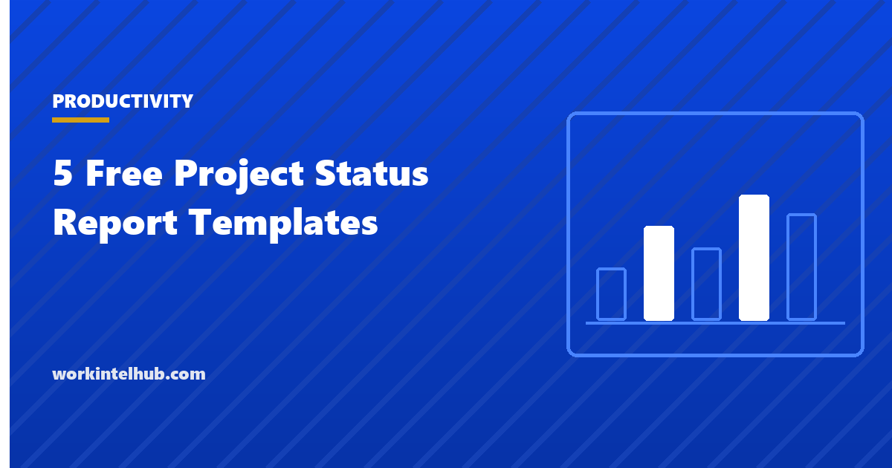

5 Free Project Status Report Templates

A status report has one reader in mind: the person who was not in the room and has four minutes. It tells them whether the project is on track, what changed since last time, what is at risk, and what they need to decide. Reports that do not do that in the first ten lines are not read, and projects whose reports are not read get surprises escalated instead of decisions made.
Five formats are here. A weekly one-pager for the team and sponsor; an executive summary for leadership; a RAG dashboard that scores schedule, budget, scope, risk and quality; a milestone report for date-driven projects; and a portfolio roll-up that puts several projects on one page. The Excel version calculates variances and the overall RAG; Word and PDF carry the narrative.
Download the templates
Free files: Word, Excel and PDF
Three files, free, no email required. Word to edit, Excel to track, PDF to print or share.
Templates open in Microsoft Word, Excel, Google Docs and Sheets, LibreOffice and any PDF reader. Free to use and adapt for your organisation.
The five formats
| Format | Reader | Frequency | Length |
|---|---|---|---|
| Weekly one-pager | Sponsor and team | Weekly | One page |
| Executive summary | Leadership | Monthly or at gates | Half a page |
| RAG dashboard | Steering group | Weekly or fortnightly | One table |
| Milestone report | Owner and sponsor | Weekly on date-driven projects | One table |
| Portfolio roll-up | Portfolio board | Monthly | One line per project |
What to write, in order
Status first: green, amber or red, with the reason in the same line. Then what changed: progress as outcomes ("design signed off", not "worked on design"), and what is planned next. Then the three things that could go wrong, each with an owner and the action being taken. Then the decisions needed, from whom, by when. Budget last, as three numbers: spent, forecast at completion, variance. If the reader stops after the status line they should still know whether to worry; if they read to the end they should know what to do.
Amber is the useful colour. Green with a long list of problems and red with no ask are both failures of the report. The RAG dashboard defines each colour by a measurable threshold so the status is a fact rather than a mood; the thresholds in the Excel sheet are starting points to adjust. The reporting capacity to leadership guide covers the same discipline for resourcing.
What makes status reports unread
- Activity instead of outcomes: a list of meetings held is not progress.
- Status that never changes colour, so nobody believes it when it does.
- Risks with no owner and no action, which are just worries.
- No ask. A report that needs nothing from the reader trains the reader to skip it.
- Length. A page is the limit for weekly; half a page for executives.
- Inconsistent timing. Weekly means the same day every week, including quiet ones.
Where the numbers come from
A status report is a summary of the project's working documents, not a separate exercise. Schedule variance comes from the schedule, budget variance from the cost tracker in the plan, open changes from the change log, risks from the register. If producing the report takes more than an hour, the working documents are not being kept, and that is the problem to fix.
Key takeaways
- A status report answers four questions in order: are we on track, what changed, what is at risk, what do you need to decide.
- Define green, amber and red by thresholds so status is a fact; the dashboard calculates them.
- Outcomes, owners, asks, one page; the same day every week.
- The report summarises the working documents; if it takes over an hour, fix the documents.
Frequently asked questions
What should a project status report include?
Overall status with the reason, progress since the last report as outcomes, what is planned next, the top risks and issues with owners and actions, decisions needed with who and when, and the budget position as spent, forecast and variance. Milestones with baseline and forecast dates on date-driven projects.
How often should status reports be sent?
Weekly to the sponsor and team on active projects, monthly to leadership and portfolio boards, and at every stage gate. The same day each time; a report that arrives when there is news trains readers to assume silence is good.
What do RAG statuses mean?
Green: on track against baseline. Amber: at risk or slightly behind, with corrective action under way. Red: off track, needing a decision or intervention from outside the team. Define each by thresholds (days behind, forecast variance percent, open red risks) so the colour is a fact.
How long should a status report be?
One page for a weekly report, half a page for an executive summary, one line per project in a portfolio roll-up. Detail belongs in the working documents the report links to.
What is the difference between a status report and a progress report?
In practice the terms overlap. A progress report describes work done; a status report compares the project with its plan and says what is needed. The templates here are status reports in that sense: every one of them has a status, a variance and an ask.